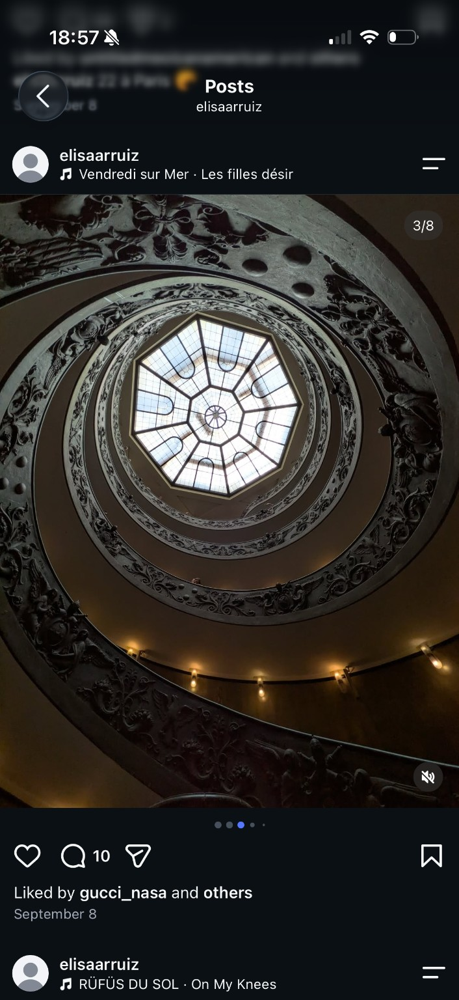
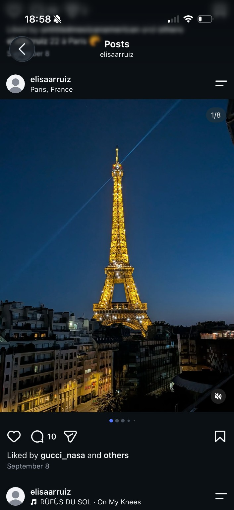
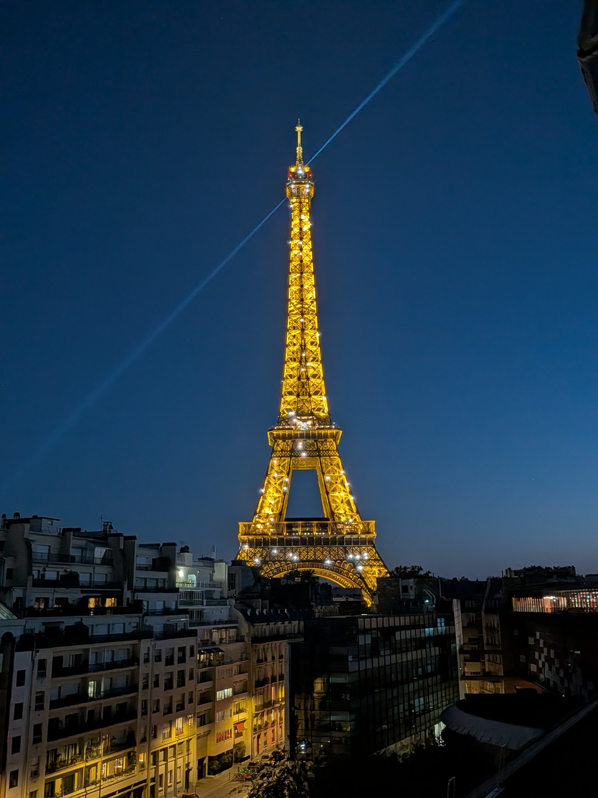
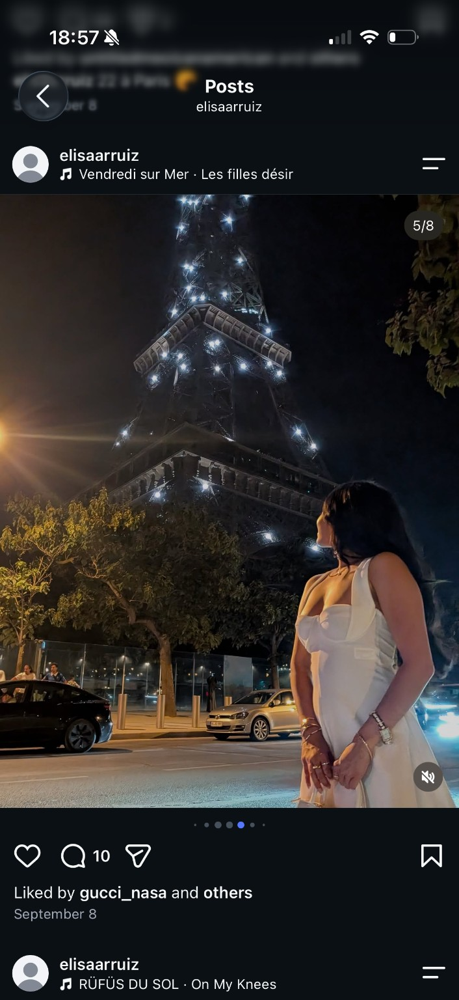
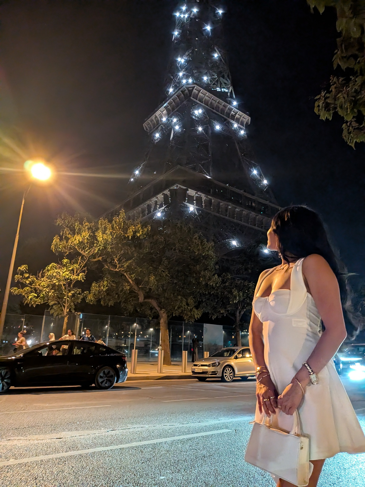
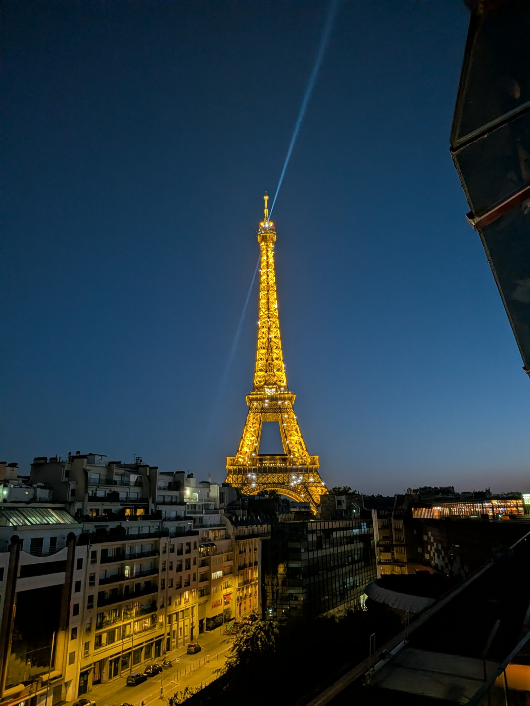
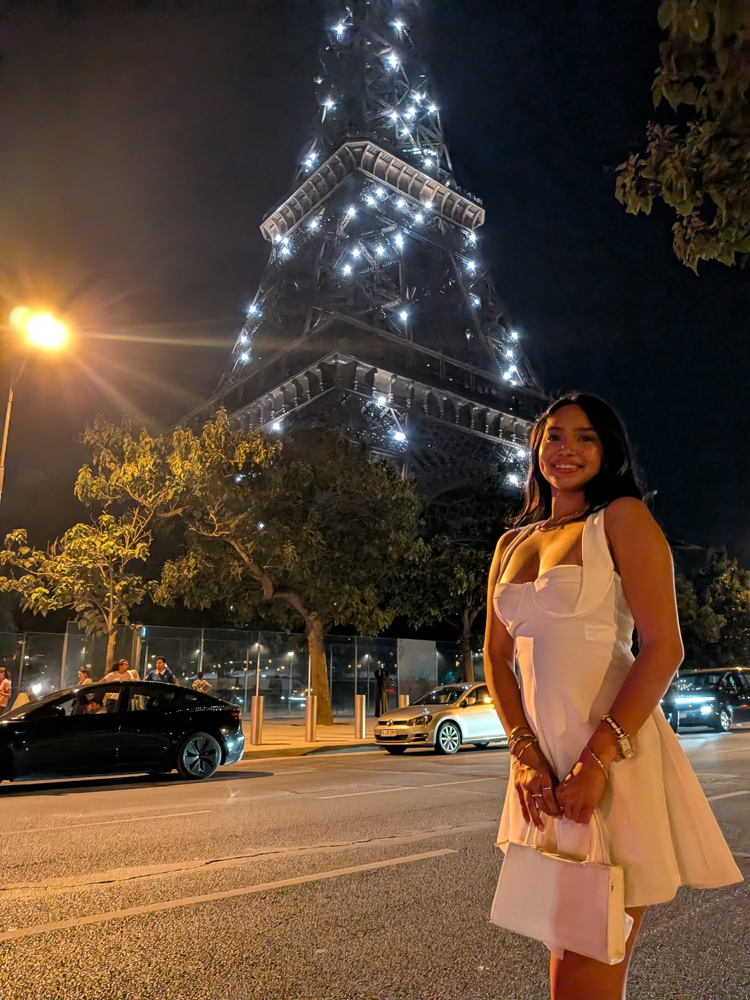
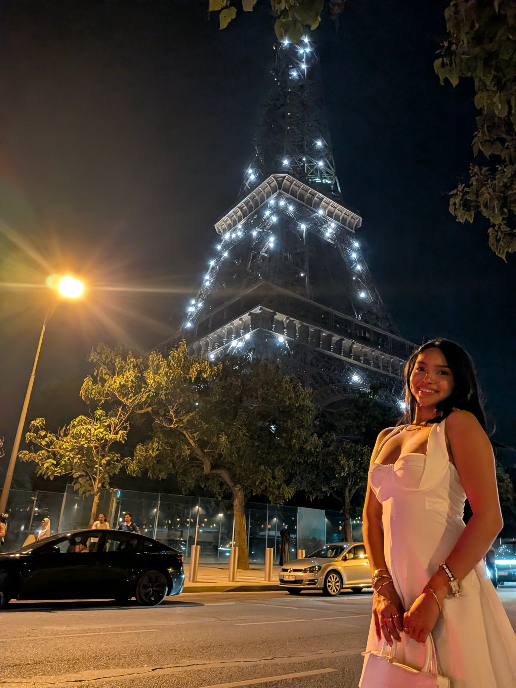
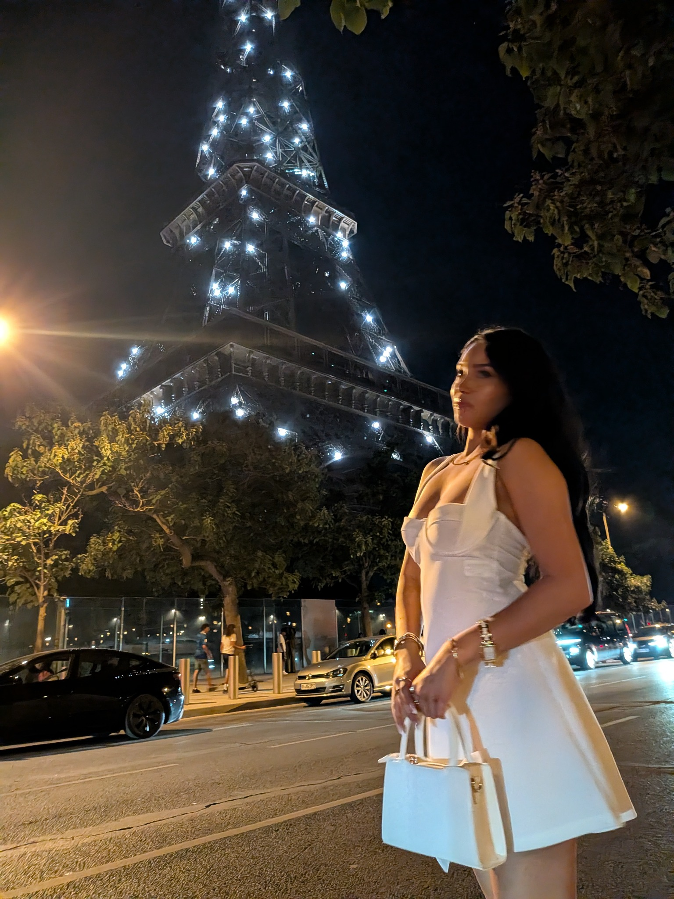

Slide 3/8 · Spiral staircase and skylight
Supporting source photograph of the same staircase and skylight. Framing differs; an exact-frame match has not been established.


01-22212.png
.jpg)
PXL_20260817_122207921 (2).jpg
Supplemental photographic evidence
Copyright claimant: Hassan A. Khalifeh · Account: @elisaarruiz
Related reports: 1056378363907479 and 2649127802224453. Third reference pending submission.
Reported Instagram carousel — exact supplied URL
The supplied screenshots display September 8 and carousel positions 1/8, 3/8 and 5/8. Slide 4, the statue, is excluded from this submission.
This schedule records the claimant’s supplied photographs and screenshots. Visual correspondence and supporting alternate frames are distinguished below. It does not independently establish authorship or permission history.
Strong visual correspondence: diagonal searchlight, tower, skyline and foreground buildings. The other rooftop photograph is an alternate frame.


Supporting source photograph of the same staircase and skylight. Framing differs; an exact-frame match has not been established.

Closest supplied portrait: head turned toward the tower, hands together, white outfit and corresponding traffic. Other portraits are supporting alternate frames; this comparison is not a pixel-identity certification.


These document the same scenes and photographic sequence; they are not individually asserted to be the exact posted frames.




Seven supplied JPEGs are 1536 × 2048 pixels. No readable EXIF capture timestamps were found in these uploaded copies. Date-like filename strings are not independently verified capture metadata. SHA-256 values identify the supplied files only; they do not prove authorship or capture time.
Existing evidence overview · Earlier individual source links